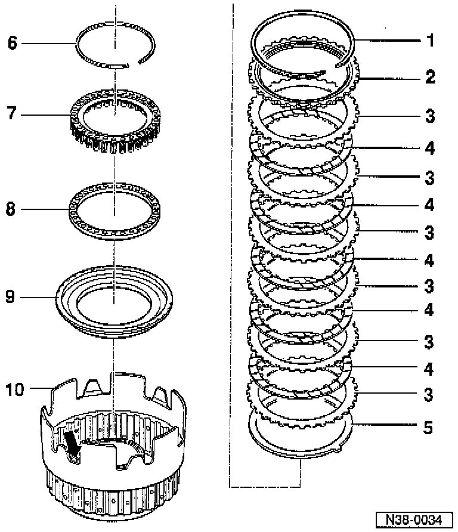

Disassemble/Assemble

COMPONENT NOTES AND INFORMATION
NOTE: When performing repairs to the clutch, ensure that the ball valve (arrow) is not damaged.
1 Circlip
- Mark after removing and install in same position
2 Thrust plate
- Smooth side facing inner plates
- Thickness with clutches of:
4 inner plates 6.5 mm
5 inner plates 4.9 mm
3 Outer plate
- Quantity used. Application and ID
4 Inner plate
- Quantity used. Application and ID
5 Corrugated washer
6 Circlip
- Removing and installing, refer to: Fig. 1, below.
- Installation position, refer to Fig. 2, below.
7 Spring supporting plate
- With springs
- Installation position, refer to: Fig. 2, below.
8 Spring supporting ring
9 Piston
- Sealing lips are vulcanized to piston
- Moisten sealing lips with ATF before installing
- Turn piston slightly when installing
10 Clutch housing
PROCEDURES

Fig. 1 Circlip {arrow), removing and installing
- Press spring supporting plate down with 3267 enough so that Circlip can be removed and installed.
NOTE: Do not damage clutch housing ball valve.

Fig. 2 Spring supporting plate/circlip, installation position
- Circlip (arrow) must be seated in the groove of clutch housing.
- Spring supporting plate must be centered relative to hub.